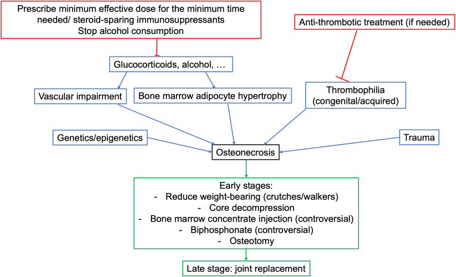
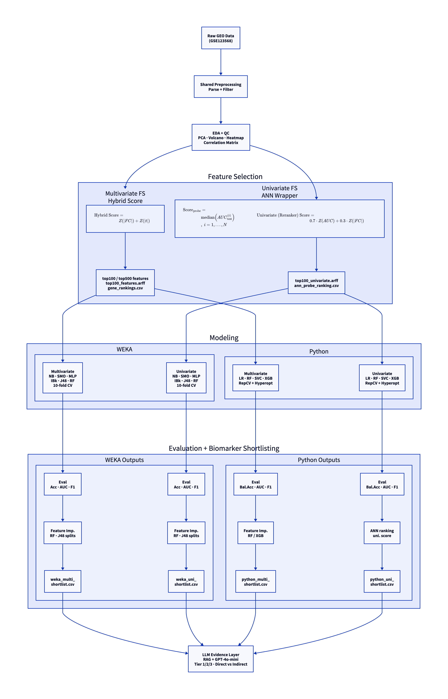

CAPSTONE PROJECT — FINAL REPORT
Rubric: dataset, methods, key results, significance — 150–250 words, past tense for methods/findings, present tense for significance
[S1 — Clinical context: name SONFH, its cause (glucocorticoid-induced avascular necrosis), consequence (femoral head collapse), and why early molecular detection is an unmet clinical need.]
[S2 — Gap: state that reliable blood-based biomarkers validated across independent analytical frameworks are currently lacking.]
[S3 — Objective: state that this study applied supervised ML to GSE123568 via four independent pipelines to identify convergent candidate biomarkers.]
[S4 — Dataset and methods: GSE123568 (40 samples, 30 SONFH / 10 control, Affymetrix GPL15207); Weka (manual baseline) + Python AutoOmics (automated extension), each evaluated under multivariate hybrid-score and univariate ANN feature selection; LLM tier-based evidence evaluation via Agentic RAG (GPT-4o-mini).]
[S5 — Findings: state best classifier per pipeline with its primary metric — e.g. Auto-Weka PART (97.5% accuracy, AUC 0.950) and Python tuned RF (AUC [confirm from top-500 run]). State total unique candidates: 14 genes, 6 with Tier 1 direct evidence.]
[S6 — Overlap: "GYPA, TSTA3, and PIP5K1B were consistently identified by both multivariate pipelines; NLRP1 was independently recovered by both univariate pipelines. Several genes including GYPA and TSTA3 carry Tier 1 direct evidence support."]
[S7 — Significance: cross-pipeline convergence and tier-based validation supports biological relevance; erythroid-vascular and immune-inflammatory signals implicated, consistent with known SONFH pathophysiology.]
Steroid-Induced Osteonecrosis of the Femoral Head (SONFH) is a severe debilitating joint and bone condition that is characterized by reduced blood supply to the hip socket (acetabulum) leading to bone death (osteonecrosis) and even a full joint collapse. The disease is known to be caused by commonly prescribed glucosteroid medication used to treat autoimmune-related and inflammatory diseases such as prednisone for Allergy Induced Asthma and others (Citation 1). The condition also can be triggered by reduced blood supply (ischemia), altered lipid metabolism and oxidative stress caused by prolonged alcohol abuse (Citation 2). Pharmacological interventions and experimental blood serum transfusions have been promising but without early detection the condition is usually irreversible and requires surgical intervention such as a full joint replacement. Recent research efforts have been able to find promising potential serum biomarkers for early detection but more work is still needed. This paper serves as an exploratory research analysis to showcase robust machine learning and automation techniques for identifying and qualifying biomarkers for SONFH detection. I have chosen to base this report off of the GSE123568 (Citation 3) data set where of the 40 surveyed patients: 30 had developed SONFH after prolonged use of steroids while 10 control patients developed no adverse symptoms after steroid usage.

Unfortunately because of recent and ongoing research in the field, the most robust datasets and results have not been made fully public. So I have had difficulty finding a GEO dataset that has enough patients and raw data to actually be viable for training a machine learning model to a statistically valuable result. So I decided to rely on the dataset that has the most patients with the trade off of switching to using microarray data (GSE123568) rather than RNA-seq data as mentioned in the rubric because of insufficient patient-level samples, and several were single-cell datasets unsuitable for bulk-level supervised classification. Because of this we cannot discover novel isoforms, but my ML approach is suitable enough toward classification goals and uses a custom automated ML pipeline to rank and research genes of interest from the microarray of 49,293 gene probes these researchers used (Citation 3).
Rubric: justify methodological choice — reproducibility and transparency [EXPAND — ~50 words. Add: microarray measures relative probe hybridisation intensity for predefined transcripts, producing a stable RMA-normalised expression matrix well-suited to supervised classification. Novel transcript discovery is not possible, but this is not a limitation for the binary classification goals of this study (SONFH vs control). Cite 1–2 references for microarray methodology / RMA normalisation (Citation 4).]
As mentioned before, there has been issues with limitations of available data and the expression data we do have has a dimensionality asymmetry (49,293 probes, 40 samples) meaning that we could be prone to noise and overfitting while also accidentally filtering out key genes of interest before we ever even run the data through any machine learning pipeline. Weka and the other tools covered in the course are well made and easy to use, but I also wanted to test how well my own pythonic approaches to this problem would fare on the same dataset. So I decided after doing a manual run of a suite of relevant Weka ML models and an Auto-Weka analysis to also create a more automated and robust Omics ML Pipeline to try and increase the chances of finding genes of interest. I created the automated python app to mirror the manual steps taken in Weka to then compare and combine findings of both pipelines. The provided README.md documentation for both pipelines is fully comprehensive with step by step reproducibility, screenshots and EDA/Results plots. Both the manual Weka 'pipeline' and the AutoOmics ML pipeline employ two feature selection strategies; a multivariate hybrid score reranker & filter (combining fold change and t-statistic) and a univariate ANN wrapper (evaluating each gene independently). This was done in the pursuit of finding the most genes with the strongest evidential support provided by research citations found using Agentic RAG to back their relevance to SONFH.
Rubric: justify dual-pipeline design — comparability and scientific rigour [EXPAND — ~50 words. Add: running both multivariate and univariate strategies allows comparison of which genes are individually diagnostic versus which work best as a collective feature set. Genes appearing in both shortlists carry the strongest evidential support, as they are robust to both approaches. Cite Citation 5 for Weka / ML in bioinformatics.]
In summary, the goal of this report is to use both WEKA and an automated ML pipeline to analyse the same dataset to:
Together, these objectives form a layered approach — from classification performance and feature selection, through convergent biomarker shortlisting, to tier-based literature validation — all aimed at producing a robust and reproducible candidate gene list from this microarray dataset. In addition, the AutoOmics ML App was written in a way where it could be easily configured to work for other GEO datasets of similar structure.
As outlined in the Introduction, the GSE123568 dataset was chosen for the sheer amount of probes used and the fact that there were enough samples (30 SONFH and 10 non-SONFH controls), providing both biological relevance and sufficient class representation for supervised machine learning.
The GSE123568 was obtained from the NCBI Gene Expression Omnibus (GEO) repository and was generated using microarray technology (Affymetrix Human PrimeView, GPL15207) to detect raw expression data for the genes which those probes targeted. This does not allow for the detection of novel transcripts like RNA-seq would, but given that there is a dearth of public and human patient-level samples data available for this disease, I believe that a microarray panel will suffice for the purposes of this course and this capstone project. The raw files of this study provide an initial matrix of 49,293 probes across 40 samples, after which variance filtering was applied to remove probes with IQR < 0.5 log₂ units, resulting in 11,687 retained probes; the data were confirmed as log₂-transformed and normalised (range 1.43–14.14) and required no further transformation.
After downloading the input files (GEO series matrix and SOFT family files) from NCBI GEO, a series of preprocessing scripts were run to prepare the data for model training. These scripts reproduce and extend the core functionality of the R scripts provided during the course (Transpose_Function.R and simple ANN wrapper and filter.R), and are shared as utility files between the standalone Weka preprocessing workflow and the AutoOmics ML pipeline to ensure methodological parity.
Step 1 — Parsing: Transpose_Function.R was reimplemented as parse_series_matrix.py, a standalone script that parses the GEO series matrix format, extracts sample metadata from the accompanying SOFT file, and transposes the expression matrix to a samples × probes orientation with class labels appended ("control group" or "SONFH group"), producing output compatible with both Weka's ARFF format and the Python pipeline's CSV input.
Step 2 — Variance filtering: The filtering functionality of simple ANN wrapper and filter.R was reimplemented in preprocess.py. Probes with low expression variance are uninformative for classification and were removed prior to feature selection. Two filtering thresholds were applied depending on the downstream pipeline: for the Weka branch, probes with an IQR below 0.5 log₂ units were removed, retaining 11,687 probes — consistent with the original R script; for the AutoOmics Python branch, a less strict threshold of IQR < 0.2 log₂ units was applied, retaining 45,465 probes to allow a wider and more robust feature selection step. In both cases, no additional normalisation was required as the GEO series matrix data is already RMA-normalised (Robust Multi-array Average) and log₂-transformed (expression range: 1.43–14.14).
Prior to feature selection, exploratory data analysis (EDA) visualisations (PCA, volcano plot, expression heatmap, and sample correlation matrix) were generated from the filtered matrix to inspect data quality and confirm class separation before model training (Section 3.2). The filtered expression matrix then served as the common input for two independent feature selection strategies, described in Section 2.2.
Univariate (ANN Wrapper Approach): A univariate ANN wrapper approach was implemented, as described in the course and provided in the simple ANN wrapper and filter.R file, to evaluate each probe independently. For each probe, a small neural network model was trained using only that single feature as input, following repeated stratified Monte Carlo cross-validation splits (typically 70% train / 30% test). Model performance was evaluated on held-out test data, and probes were ranked based on their median test AUC across all runs. This produces a ranking of the form:
In addition to the ANN-based implementation, alternative single-feature models including logistic regression and RBF-kernel SVM were also evaluated to assess robustness of the ranking; however, the ANN-based wrapper was retained as the primary method due to its stable and interpretable performance. The top 100 probes were selected after this univariate feature selection for both the manual Weka-based and AutoOmics univariate pipelines. Multiple feature selection strategies were explored; however, only those yielding stable and interpretable results are emphasised in this report. This approach isolates genes with strong independent predictive signals, but does not capture interactions between genes.
An optional reranking step was also tested to break ties among probes with similarly high ANN performance. In this variant, probes were reranked using:
These weights allow genes with both high AUC and large fold change to rise to the top of the ranking.
Multivariate (Hybrid Scoring Approach): In contrast to the univariate ANN wrapper, the feature_select.py script uses a hybrid ranking score that evaluates all probes simultaneously using differential expression statistics:
This approach prioritises probes that are both strongly differentially expressed (effect size) and statistically significant across all samples. The top 100 probes were selected for the Weka-based classification, while the AutoOmics Python pipeline was tested with both top 100 and top 500 probes. My intuition behind expanding the feature set from 100 to 500 was that for the multivariate results a wider pool of lower-ranked features would reduce the dominance of higher-ranked signals, allowing additional potentially significant but weaker-signalled gene patterns to contribute to the model performance and make it into the final biomarker shortlist (described in Section 2.5). Output files were generated in .arff format for direct compatibility with Weka.
After the feature selection strategies in Section 2.2 were run as standalone scripts, the formatted .arff input file is ready for Weka. I then uploaded and ran a full suite of classification algorithms which were evaluated under a consistent cross-validation framework, and model performance was compared using standard metrics (Accuracy, AUC ROC, Weighted F1-score, Kappa) to identify the optimal model. The best model, Random Forest, was chosen after a comparative analysis (see Sections 3.3–3.4), then the J48 Decision Tree is used to split nodes so any probes used at the decision boundaries are added to the biomarker shortlist, which serves as the input into the Agentic RAG enrichment job.
Raw GEO Data (GSE123568)
(series_matrix.txt.gz + family.soft.gz)
│
▼
ingest_job → parse_job → preprocess_job
│
┌────────────────┴────────────────┐
▼ ▼
Multivariate FS Univariate FS
feature_select_job univariate_ann_job
(Hybrid: Z(FC) + Z(t-stat)) (ANN/Logistic Wrapper)
│ │
▼ ▼
top100/top500_features.arff top100_features_univariate_ann.arff
gene_rankings.csv ann_probe_ranking.csv
│ │
┌──────────┴───────────┬──────────────────┴──────────────┐
│ WEKA (Manual) │ PYTHON (Automated) │
│──────────────────────│─────────────────────────────────│
│ NB, SMO, MLP │ LR(ElasticNet), RF, LinearSVC │
│ IBk k=1/3/5, J48, RF │ GNB, KNN, MLP, XGBoost │
│ 10-fold Stratified CV│ RepeatedStratKFold (5×10 = 50) │
│ Acc, AUC, F1, Kappa │ Balanced Accuracy + MLflow │
│ RF importance │ Hyperopt 50 trials (RF + XGB) │
│ + J48 split nodes │ RF / XGB feature importance │
└──────────┬───────────┴──────────────────┬──────────────┘
▼ ▼
weka_biomarker_shortlist.csv biomarker_shortlist.csv
└──────────────┬─────────────┘
▼
LLM Biological Interpretation
(Agentic RAG — GPT-4o-mini)
Tier 1/2/3 · Direct vs Indirect
The AutoOmics pipeline was designed to automate and extend the same core logic with improved reproducibility and class-imbalance handling. Following the same parsing and preprocessing steps, the pipeline operates in two modes (--mode multivariate and --mode univariate), evaluating a suite of classifiers under a RepeatedStratifiedKFold scheme (5×10). Balanced accuracy is used as the primary metric to account for the 30:10 class imbalance. The best-performing model is then used to derive feature importance, generating the biomarker shortlist for downstream LLM-based biological interpretation and validation. A detailed comparison of model performance and justification of the selected model is provided in Sections 3.5 and 3.6.
The Python pipeline was implemented using scikit-learn (≥1.4) for classification and cross-validation, with additional models including XGBoost (≥2.0). Hyperparameter optimisation was performed using Hyperopt (≥0.2.7), and experiment tracking was managed with MLflow (≥2.13). Data processing and statistical analysis were conducted using pandas, NumPy, and SciPy, while visualisations were generated with matplotlib and seaborn. The LLM-based enrichment stage utilised the OpenAI Python SDK (GPT-4o-mini), with tools for retrieval from biomedical sources via Biopython (PubMed), sentence-transformers (embeddings), with Pydantic frameworks supporting the smooth transition from prompt to standardised structured LLM output as JSON files. Configuration and utility components were handled using PyYAML and python-dotenv.
The Agentic Retrieval Augmented Generation (RAG) powered enrichment stage is instructed to act as a research assistant and to minimise any LLM hallucinations. It utilises powerful context and prompt templates with situational variable injection, unsupervised agentic tool registry, output history, and recursive reasoning loops with a hard stop at 4 loops to guarantee an output. The specific tools chosen for this task were calls to reputable public research resources: PubMed Entrez API to search for papers based on PID or keyword search, UniProt API for human gene and protein function, OpenTargets API for gene–disease association, and the Wikipedia API to find generic information when all other avenues fail. The generated prompt has many guardrails and ground rules for acceptance while also using a tiered (1–4) ranking system for the citations it finds (or doesn't) to support its reasoning. It also retains any relevant numerical metadata output by the model to allow for multiple values to search by. This is all designed to contextualise findings from any of the pipelines fed to it through the biomarker_shortlist.csv files. It does not attempt to confirm biomarkers but provides as much supporting material as possible to help a human in the loop make the most informed decision on which genes to follow up on. This provides a standardised measure of biological credibility that goes beyond statistical ratings and selections alone. This functionality was built modularly with prompt and fact injection so that it could be reused for many different disease types or datasets going forward.
The pipeline was evaluated at multiple levels because no single metric fully captures biomarker quality. Different stages were designed to optimise different objectives: statistical feature selection was used to detect strong expression signals, classification metrics were used to assess predictive performance, and tier-based evidence review was used to assess biological validity.
Predictive performance metrics: AUC (area under the ROC curve), balanced accuracy, weighted F1-score. Balanced accuracy was prioritised in the AutoOmics pipeline due to class imbalance (30:10).
Biological validity — tier-based evidence framework:
Relational evidence types: direct — retrieved sources explicitly link this gene to the active disease; indirect — no direct disease paper, but biologically relevant pathway or mechanism support exists; inferred — reasoning from general gene biology with weak disease-specific grounding.
Interpretive principles: high model importance does not always equal high biological importance; total gene count ≠ pipeline quality; correlated genes may share the same biological signal, causing predictive models to prioritise only one representative feature (see Section 4.3).
This evaluation framework enables comparison not only of predictive performance, but also of biological validity — distinguishing pipelines that identify statistically predictive features from those that also recover literature-supported biomarkers, and assessing the quality of that literature, not just supposition of predictive features.

| Aspect | WEKA Multi | WEKA Uni | PYTHON Multi | PYTHON Uni |
|---|---|---|---|---|
| Feature selection | Hybrid: Z(|FC|) + Z(|t|) | Per-probe ANN AUC | Hybrid: Z(|FC|) + Z(|t|) | ANN AUC + optional re-rank |
| Input probes | Top 100 | Top 100 | Top 500 (best run) | Top 100 |
| Platform | Weka 3.8 GUI | Weka 3.8 GUI | scikit-learn, MLflow, Hyperopt | scikit-learn, MLflow, Hyperopt |
| Classifiers | NB, SMO, MLP, IBk, J48, RF, Auto-Weka | NB, SMO, MLP, IBk, J48, RF | LR, RF, SVC, GNB, KNN, MLP, XGBoost | LR, RF, SVC, GNB, KNN, MLP, XGBoost |
| Tuning | Auto-Weka | Weka defaults | Hyperopt (50 trials; RF + XGB) | Hyperopt (50 trials; RF + XGB) |
| Cross-validation | 10-fold stratified | 10-fold stratified | RepeatedStratKFold (5×10 = 50) | RepeatedStratKFold (5×10 = 50) |
| Primary metric | Standard accuracy + AUC | Standard accuracy + AUC | Balanced accuracy + AUC | Balanced accuracy + AUC |
| Shortlist basis | RF importance + J48 splits + FC | RF importance + J48 splits + FC | RF importance × freq × FC | ANN univariate score (+ re-rank) |
| LLM genes evaluated | 7 | 3 | 7 | 4–6 |
The GSE123568 dataset comprised 40 patient-level microarray samples — 30 SONFH cases and 10 non-SONFH controls. Raw expression data contained 49,293 probes. After variance filtering (IQR < 0.2 log₂ units), 45,465 probes were retained for downstream analysis. Principal component analysis (PCA) of the filtered matrix revealed that the first two components explained 88.0% and 2.4% of total variance respectively (total: 90.4%), indicating strong dominant structure consistent with a biological signal separating the two classes.
As this study uses microarray data, expression values are derived from probe hybridisation intensity rather than direct transcript counts (as in RNA-seq). While this introduces limitations such as probe cross-hybridisation and reduced dynamic range, the resulting expression matrix remains suitable for downstream machine learning analysis.
Rubric: present quantitative dataset summary; acknowledge class imbalance as context for metric choice [ADD 1–2 sentences: note the 30:10 class imbalance and explain why this motivated the choice of balanced accuracy as the primary metric in the Python pipeline. Reference Figure 3 for the PCA visualisation confirming class structure.]
Rubric: describe EDA findings; demonstrate data quality; reference specific figure panels [WRITE HERE — ~80 words. Walk through panels A–F of Figure 3. Key points to hit: (A) near-complete class separation along PC1 (88.0% variance) — state whether SONFH and control clusters are visually distinct; (B) describe cluster of high-FC probes at the top of the volcano; (C) state whether SONFH and control samples form distinct expression blocks in the heatmap; (D) note predominant direction of change (expect mostly downregulated in SONFH); (E) describe degree of class overlap in top probe boxplots; (F) describe whether SONFH samples cluster together and controls separately in the correlation matrix.]
The two best performing models were the Multilayer Perceptron (ANN) and the Random Forest (200 trees), but the MLP seemed to be suffering from overfitting and lacked interpretability, so I used the Random Forest attribute importance ranking score to rank all the probes.
Rubric: present classification results with specific metrics; justify model selection; compare across classifiers [WRITE HERE — ~60 words. State that Auto-Weka achieved the highest accuracy (97.5%, 1 misclassification) using a PART rule learner with CfsSubsetEval attribute selection. RF and Auto-Weka tied for the highest AUC (0.950). Note that all models exceeded 90% standard accuracy on this dataset. Reference Table 2 and Figure 4. State why RF was selected for the biomarker shortlist (interpretable feature importance rankings).]
| Model | Accuracy (%) | F1 (Wt.) | ROC AUC | Notes |
|---|---|---|---|---|
| Auto-Weka | 97.5 | 0.975 | 0.950 | Best overall; PART + CfsSubsetEval; 1 error |
| J48 | 95.0 | 0.948 | 0.820 | Single split on PIP5K1B (≥4.915) |
| Random Forest | 92.5 | 0.924 | 0.950 | Tied highest AUC; top features: RHD, RHCE |
| Naive Bayes | 92.5 | 0.926 | 0.932 | |
| MLP | 92.5 | 0.920 | 0.937 | |
| SMO (SVM) | 90.0 | 0.896 | 0.833 | Lowest AUC overall |
| IBk (k=1) | 90.0 | 0.896 | 0.833 | 4 misclassifications |
| IBk (k=3) | 90.0 | 0.896 | 0.837 | |
| IBk (k=5) | 90.0 | 0.896 | 0.835 |
Rubric: compare classifier performance across feature sets; justify which metric to report and why
[WRITE HERE — ~80 words. Fill metric values from data/femoral_head_necrosis/weka_models/univariate_ann/ result files. State which model performed best on univariate features. Compare the overall performance level to the multivariate branch (Table 2) — did accuracy improve, stay similar, or drop? Note the J48 split gene for this branch (is it still PIP5K1B, or a different gene?). Note whether NLRP1 appeared in the RF feature importance for this run. Reference Table 3 and Figure 5.]
| Model | Accuracy (%) | F1 (Wt.) | ROC AUC | Notes |
|---|---|---|---|---|
| [Fill from univariate_ann .txt result files — same model set as Table 2] | ||||
Rubric: report balanced accuracy and AUC as primary metrics; justify model selection; note Hyperopt tuning impact; acknowledge the metric difference from Weka
[WRITE HERE — ~80 words. Confirm metric values from output_new_multivariate_top500/model_comparison.csv. State which model achieved the best AUC and which achieved the best balanced accuracy. Note whether Hyperopt tuning improved RF performance vs the untuned baseline. Explicitly state that balanced accuracy is reported here (not standard accuracy) because of the 30:10 class imbalance — and that this makes Weka vs Python numbers not directly comparable (see Section 2.6). Reference Table 4 and Figure 6.]
| Model | AUC | Bal. Acc. | F1 (Wt.) | Accuracy | Notes |
|---|---|---|---|---|---|
| Random Forest (T) | [confirm] | [confirm] | [confirm] | [confirm] | Best AUC — top-500 run |
| Linear SVC | |||||
| Random Forest | |||||
| MLP | |||||
| XGBoost (T) | |||||
| Gaussian Naive Bayes | |||||
| Logistic (ElasticNet) | |||||
| XGBoost | |||||
| KNN |
Rubric: compare performance between feature selection strategies; explain why metrics may differ between multivariate and univariate runs
[WRITE HERE — ~80 words. Fill from output_new_univariate_top100/model_comparison.csv. State the best model and its AUC and balanced accuracy. Compare to the multivariate run (Table 4) — note whether simpler linear models (Logistic, SVC) perform comparably here. This is expected if ANN-ranked features are individually diagnostic (each probe already discriminates well alone, so linear models work fine). Reference Table 5 and Figure 7.]
| Model | AUC | Bal. Acc. | F1 (Wt.) | Accuracy |
|---|---|---|---|---|
| [Fill from output_new_univariate_top100/model_comparison.csv] | ||||
Both Weka and Python pipelines independently generated biomarker shortlists under both multivariate and univariate feature selection strategies. After LLM-based tier filtering (direct evidence only, Tier 1–3), 14 unique candidate genes were identified across all four pipelines. Six of these genes were confirmed in the curated SONFH known-gene literature (NLRP1, BPGM, GYPA, HEMGN, TMCC2, RUNX2); eight represent novel candidates not previously catalogued in the curated set. Table 6 presents the complete audit; Table 7 summarises per-pipeline counts.
| Gene | Weka Multi | Weka Uni | Python Multi | Python Uni | # | Tier | |FC| | Notes |
|---|---|---|---|---|---|---|---|---|
| GYPA | ✓ T1 | — | ✓ T1 | — | 2 | T1 | ~2.45 | Multi overlap; erythrocyte surface glycoprotein; literature ✓ |
| TSTA3 | ✓ T1 | — | ✓ T1 | — | 2 | T1 | ~1.74 | Multi overlap; #1 hybrid score overall |
| BPGM | ✓ T1 | — | ✓ T2 | — | 2 | T1 | ~3.39 | Multi overlap; erythrocyte O₂ metabolism (2,3-BPG); literature ✓ |
| HEMGN | ✓ T2 | — | ✓ T1 | — | 2 | T1 | ~2.94 | Multi overlap; erythroid transcription cofactor; literature ✓ |
| PIP5K1B | ✓ T2 | — | ✓ T2 | — | 2 | T2 | ~2.02 | Multi overlap; J48 split gene (≥4.915); PI signalling kinase |
| CISD2 | ✓ T2 | — | ✓ T2 | — | 2 | T2 | ~2.10 | Multi overlap; mitochondrial iron-sulphur cluster protein |
| NLRP1 | — | ✓ T1 | — | ✓ T1 | 2 | T1 | ~1.27 | Uni overlap; inflammasome sensor; IL-1β activation; literature ✓ |
| P2RY13 | — | ✓ T2 | — | ✓ T2 | 2 | T2 | ~1.29 | Uni overlap (rerank + Weka uni); purinergic receptor; platelet signalling |
| TMCC2 | ✓ T2 | — | — | — | 1 | T2 | ~2.76 | Unique Weka multi; ER membrane protein; literature ✓ |
| RUNX2 | — | ✓ T2 | — | — | 1 | T2 | ~1.22 | Unique Weka uni; master osteoblast TF; literature ✓ |
| STOM | — | — | ✓ T2 | — | 1 | T2 | ~1.63 | Unique Python multi; stomatin; erythrocyte membrane lipid raft |
| CBL | — | — | — | ✓ T1 | 1 | T1 | ~1.01 | Unique Python uni; E3 ubiquitin ligase; immune cell signalling |
| LCP1 | — | — | — | ✓ T1 | 1 | T1 | ~0.93 | Unique Python uni; L-plastin; leukocyte actin bundling |
| SETD1B | — | — | — | ✓ T2 | 1 | T2 | ~0.72 | Unique Python uni; histone methyltransferase |
| Pipeline | Genes eval. | T1 direct | T2 direct | Total direct | In ≥2 pipes |
|---|---|---|---|---|---|
| WEKA Multivariate | 7 | 3 | 4 | 7 | 6 |
| WEKA Univariate ANN | 3 | 1 | 2 | 3 | 2 |
| PYTHON Multivariate (top-500) | 7 | 3 | 4 | 7 | 6 |
| PYTHON Univariate (top-100) | 4 | 3 | 1 | 4 | 2 |
| PYTHON Univariate (Rerank) | 2 | 1 | 1 | 2 | 1 |
| Union — all pipelines | 14 | 6 | 8 | 14 | 8 |
Rubric: present the LLM evidence framework as a novel contribution; show it adds a quality dimension beyond gene count; reference specific tier counts from Table 8 [WRITE HERE — ~80 words. After each pipeline produced its biomarker shortlist, candidate genes were evaluated by the Agentic LLM pipeline (GPT-4o-mini + PubMed / UniProt / OpenTargets). Each gene received an evidence tier (1–4) and evidence relation (direct/indirect/inferred). Only genes with direct evidence at Tier 1–3 are counted in Table 8. Reference Table 8 and highlight: Weka Multi and Python Multi (top-500) are tied at 7 genes / 3 Tier 1 — illustrating that a deeper feature set does not necessarily produce higher biological credibility, but the top-500 run did produce a broader shortlist covering more of the gene space.]
| Pipeline | Genes evaluated | Tier 1 direct | Tier 2 direct | Tier 3 direct | Total direct |
|---|---|---|---|---|---|
| WEKA Multivariate | 7 | 3 | 4 | 0 | 7 |
| WEKA Univariate ANN | 3 | 1 | 2 | 0 | 3 |
| PYTHON Multivariate (top-500) | 7 | 3 | 4 | 0 | 7 |
| PYTHON Univariate (top-100) | 4 | 3 | 1 | 0 | 4 |
| PYTHON Univariate (Rerank) | 2 | 1 | 1 | 0 | 2 |
Rubric: interpret gene function; link to disease biology; justify biological relevance using LLM evidence tier and |FC| [WRITE HERE — ~80 words. State: GYPA is the major erythrocyte surface sialoglycoprotein essential for RBC membrane stability and differentiation. It was downregulated in SONFH (|FC| ~2.45). Identified independently by both multivariate pipelines, making it the most convergent candidate in this study. Reference the Tier 1 direct evidence from both pipeline LLM runs (report/best_runs/). Cautiously suggest a possible link to disrupted erythropoiesis or altered RBC biology in SONFH patients — and that this may reflect downstream vascular disruption rather than upstream causality (discussed in Section 4.2).]
Rubric: interpret classifier output (J48 split) as biological evidence; quantify classification utility [WRITE HERE — ~70 words. State: PIP5K1B is a phosphoinositide kinase involved in cell adhesion and PI signalling. It was identified by both multivariate pipelines and is the single J48 decision-tree split gene — a threshold of ≥4.915 expression units correctly classified the majority of the 40 samples with 95.0% accuracy (Table 2). The J48 designation is particularly notable: one gene's expression level alone achieved near-complete binary class separation in this dataset. Cite any known vascular or steroid-related roles.]
Rubric: explain why a gene appears in univariate but not multivariate; link to disease mechanism; use cautious language [WRITE HERE — ~70 words. State: NLRP1 is an inflammasome sensor that activates caspase-1 and IL-1β secretion in response to cellular stress. It was independently identified by all three univariate pipeline runs (Weka uni, Python uni top-100, Python uni rerank) but absent from both multivariate pipelines — demonstrating that it carries a strong independent predictive signal that is suppressed by the hybrid-score approach when correlated erythroid signals dominate. Tier 1 direct evidence in all univariate runs (score ~1.00). NLRP1-driven sterile inflammation is a plausible mechanism in steroid-induced vascular disruption. Cautious language: univariate finding only; requires experimental validation.]
Rubric: demonstrate awareness of feature-importance limitations; cite literature support; note differential tier assignment [WRITE HERE — ~80 words. State: BPGM is an erythrocyte-specific enzyme producing 2,3-bisphosphoglycerate (2,3-BPG), the key regulator of haemoglobin–oxygen affinity. It had the highest hybrid score in the initial top-100 run (|FC| ~3.39). Ranked Tier 1 by the Weka LLM run but Tier 2 by the Python LLM run. The tier discrepancy reflects the known phenomenon that correlated erythroid genes (BPGM, GYPA, HEMGN) compete for RF feature importance — the Python RF selected TSTA3 as the cluster representative, reducing BPGM's combined score (see Section 4.3). Cite Citation 8 for BPGM and erythrocyte oxygen metabolism.]
Rubric: synthesise results across all pipelines; state the main finding clearly; reference tier quality not just gene count [WRITE HERE — ~120 words. Synthesise: all four pipelines achieved strong classification performance — best Weka model Auto-Weka (97.5% accuracy, AUC 0.950, Table 2); best Python model Tuned RF, top-500 multivariate run (AUC [confirm], Table 4). 14 unique candidate genes were identified; 8 found by ≥2 pipelines (Table 6). Tier-based evaluation (Table 8) identified 6 Tier 1 direct-evidence genes — providing a quality-weighted view beyond raw gene counts. Two distinct biological signals emerged: the multivariate pipelines converged on an erythroid-vascular gene cluster (GYPA, TSTA3, BPGM, HEMGN); the univariate pipelines independently recovered an immune-inflammatory signal (NLRP1, Tier 1 across all three univariate runs). The combination of both approaches produced a richer biological picture than either strategy alone.]
Rubric: interpret biological meaning of findings; link gene functions to SONFH pathophysiology; use cautious language; contrast two biological signals [WRITE HERE — ~150 words. Address the erythroid cluster (GYPA, BPGM, HEMGN, TSTA3, TMCC2, STOM) explicitly — state that several identified genes belong to erythrocyte-related pathways, suggesting a shared underlying biological signal rather than independent mechanisms. Propose the most plausible mechanism: steroid-induced disruption of bone marrow blood supply may alter haematopoiesis and peripheral erythrocyte biology, reflected as coordinated downregulation of RBC-related genes. Importantly, frame these as likely downstream "consequence" signals — the erythroid distress from vascular collapse — rather than upstream causal drivers of osteonecrosis (the loudest genes represent the wreckage, not the arsonist). Contrast with NLRP1: represents a distinct immune-inflammatory signal potentially closer to upstream disease mechanisms. Also note RUNX2 (Weka uni, Tier 2): the master osteoblast transcription factor — its presence hints at bone-remodelling disruption. Use cautious language throughout: "may reflect," "is consistent with," "warrants further investigation."]
Rubric: demonstrate critical understanding of ML limitations; explain feature correlation and its effect on importance scores; use a concrete example [WRITE HERE — ~160 words. Make three points clearly: (1) Feature importance scores measure predictive contribution, not biological relevance. A high RF importance rank means the gene was useful for classification — not that it is the causal gene. (2) Correlated erythrocyte genes (BPGM, GYPA, CA1, HEMGN) all measure the same underlying biological process — RF models need only one proxy, selecting whichever feature splits the training data cleanest (often TSTA3). BPGM ranked #4 by hybrid score (|FC| = 3.39) but was classified Tier 2 by the Python LLM run, not because the biological signal is absent, but because the RF used TSTA3 as its cluster representative. This is a well-understood phenomenon in high-dimensional omics ML (Citation 6). (3) High AUC achieved with a small feature subset does not mean only those features are biologically relevant. Close with: "High predictive accuracy achieved with a small feature subset does not imply that only those features are biologically relevant — it implies that the disease signal is redundantly represented across many correlated genes."]
Rubric: justify use of two feature selection strategies; compare what each recovered and why; explain the complementarity [WRITE HERE — ~150 words. Frame clearly: the hybrid score asks "which genes work best together?" while the ANN wrapper asks "which genes are individually diagnostic?" — these are genuinely different scientific questions. Multivariate approach: recovered the coordinated erythroid cluster (GYPA, BPGM, TSTA3, HEMGN) because all carry high FC and t-stat simultaneously. Univariate approach: recovered NLRP1 because it has a strong independent predictive signal — but NLRP1 does not co-vary with the erythroid cluster, so it is not penalised by the hybrid score; it simply did not rank highly as a standalone fold-change or t-stat signal at the probe level. GYPA satisfies both: strong individual AUC and part of the collective erythroid feature set — making it the most robustly supported candidate. Close by noting that combining both shortlists produces a more complete picture of SONFH-associated expression changes than either strategy alone.]
Rubric: situate findings in existing literature; acknowledge methodological differences without dismissing results; cite ≥4 peer-reviewed sources [WRITE HERE — ~150 words. Priority comparisons: (1) Jia et al. 2023 (Citation 3) — the GSE123568 source paper. Zero gene overlap with your pipeline is expected and methodologically instructive: their approach used PPI network hub centrality + clinical phenomics staging; their candidate genes (IQGAP1, STAT2, CXCR4) are network connectors with modest fold changes (~1.0–1.1), not the loudest expression signals. Your pipeline ranked by statistical/ML signal strength; three Jia et al. genes appeared at the bottom of your shortlists (PIK3CD rank 493/500, IQGAP1 rank 89/100, STK11 rank 334/500) — present but not statistically dominant. The zero overlap is methodologically expected, not a contradiction. (2) GYPA and erythrocyte genes in osteonecrosis / bone marrow (Citation 7). (3) BPGM and erythrocyte oxygen metabolism (Citation 8). (4) NLRP1/inflammasome in steroid-induced bone disease (Citation 9). (5) AUC benchmark for small-cohort ML studies (Citation 10). State explicitly: Weka standard accuracy and Python balanced accuracy are not directly comparable on 30:10 data.]
Rubric: honestly assess study limitations; address dataset, platform, and analytical constraints; acknowledge what cannot be concluded [WRITE HERE — ~130 words. Include all of: (1) n=40, 30:10 class imbalance — limits statistical power; standard accuracy may be inflated on imbalanced data; (2) single dataset with no external validation cohort — findings are exploratory only; (3) microarray platform constraints — predefined probe arrays, probe cross-hybridisation (_x_at probes), reduced dynamic range compared to RNA-seq; (4) EIF1AY (Y-chromosome gene) ranked highly in Weka multivariate — possible sex-linked confounder not corrected for; (5) different feature set sizes and CV strategies between pipelines (top 100 vs top 500; 10-fold vs 5×10) — approximate comparison only, not directly equivalent; (6) no functional or wet-lab validation — all candidates are expression associations only; (7) LLM tier assignment is partially automated and may introduce retrieval biases from GPT-4o-mini (e.g. recency bias toward well-published genes).]
Rubric: suggest concrete, scientifically grounded next steps; demonstrate awareness of the broader biomarker discovery landscape [WRITE HERE — ~100 words. Suggest: (1) validation of GYPA and NLRP1 candidates in a larger, balanced, independent cohort; (2) functional validation of top candidates in relevant cell or tissue models (e.g. NLRP1 inflammasome activation in steroid-exposed endothelial or bone marrow cells); (3) pathway-level analysis connecting the erythroid cluster and NLRP1 signal to upstream regulators in the steroid → vascular → ischemia pathway; (4) multi-omics integration (proteomics, metabolomics) to triangulate candidates; (5) clinical panel development — assess whether GYPA, PIP5K1B, or NLRP1 could form the basis of a blood-based early detection signature. Optionally note that incorporating a pre-ML step checking known disease gene databases could help surface network-hub genes (as in Jia et al.) alongside the expression-dominant signals recovered here.]
Rubric: state central finding clearly; do not introduce new information; 1 sentence per point; confident tone [S1 — Central finding: this study identified 14 unique candidate biomarkers for SONFH across four independent analytical pipelines, with GYPA, TSTA3, and BPGM (multivariate) and NLRP1 (univariate) as the most reproducible; tier-based LLM evaluation identified 6 genes with Tier 1 direct literature support.]
[S2 — Methodological contribution: the parallel deployment of Weka and Python pipelines under both multivariate and univariate feature selection modes, combined with tier-based LLM biological validation, provides a layered framework that separates predictive utility from biological credibility.]
[S3 — Biological significance: convergence of multivariate pipelines on erythrocyte-associated genes (GYPA, BPGM, HEMGN, TSTA3) and independent univariate identification of NLRP1 suggests both erythroid-vascular and immune-inflammatory signals are present in GSE123568, consistent with known SONFH pathophysiology.]
[S4 — Forward-looking: GYPA and NLRP1 as the most reproducible multi-pipeline findings warrant investigation as components of a blood-based early detection panel for steroid-induced osteonecrosis of the femoral head.]
output_new_multivariate_top500): experiment UI, model metric comparison, hyperparameter logs. Demonstrates full reproducibility of the best run.][OPTIONAL — summary table of LLM outputs. Columns: Gene, Pipeline, Tier, Evidence Relation, 1-sentence summary. Source: report/best_runs/ JSON files. Useful as supplementary evidence for Section 3.8.]
| Probe ID | Gene | Evidence | RF Imp. | Overlap? |
|---|---|---|---|---|
| 11737267_a_at | RHD | RF #1 | 1.00 | — |
| 11750456_s_at | RHCE / RHD | RF #2 | 1.00 | — |
| 11728138_at | XK | RF #3 | 0.99 | — |
| 11752881_s_at | RHCE / RHD | RF #4 | 0.98 | — |
| 11745299_x_at | GYPB | RF #5 | 0.94 | — |
| 11729582_s_at | CA1 | RF #6 / Wrapper / FC top | 0.92 | — |
| 11753827_x_at | GYPB | RF #7 | 0.92 | — |
| 11731448_a_at | SNCA | RF #8 | 0.88 | — |
| 11733941_a_at | TBCEL | RF #9 | 0.81 | — |
| 11745557_x_at | GYPB | RF #10 | 0.81 | — |
| 11740680_s_at | RHCE / RHD | FC top + RF | 0.80 | — |
| 11742315_s_at | RHCE / RHD | FC top + RF | 0.76 | — |
| 11732236_a_at | GYPA | FC top + RF | 0.73 | SHARED multi |
| 11736696_a_at | HEMGN | FC top + RF | 0.73 | SHARED multi |
| 11720807_x_at | EIF1AY | FC top #1 / RF | 0.67 | — (Y-chr; possible sex confounder) |
| 11729582_s_at | CA1 | Wrapper / RF #6 | 0.66 | — |
| 11721029_a_at | PIP5K1B | J48 split / RF | 0.52 | SHARED multi |
data/femoral_head_necrosis/weka_models/univariate_ann/weka_biomarker_shortlist.csv. Highlight NLRP1, RUNX2, and P2RY13 rows.]AutoOmics_ML_Pipeline/app/data/output_new_multivariate_top500/biomarker_shortlist.csv. Columns: probe_id, gene_symbol, rf_importance, selection_freq, abs_fold_change, combined_score. Highlight GYPA, TSTA3, BPGM, HEMGN, PIP5K1B, CISD2, STOM rows.]AutoOmics_ML_Pipeline/app/data/output_new_univariate_top100/biomarker_shortlist.csv. Columns: probe_id, gene_symbol, univariate_score, abs_fold_change. Highlight NLRP1, CBL, LCP1, SETD1B. Note: ranked by ANN test AUC; also note IQGAP1 at rank 89/100 (partial overlap with Jia et al. mid-stage genes — low FC = 0.95 is why it didn't surface in LLM output).][OPTIONAL — Python model_comparison.csv exports or Weka confusion matrices. Include if needed to show per-class TP/FP rates and confirm models are not defaulting to majority-class prediction only.]
— Final report — GSE123568 | Four-pipeline architecture | Tier-aware evidence evaluation
Delete all placeholder blocks before submission.